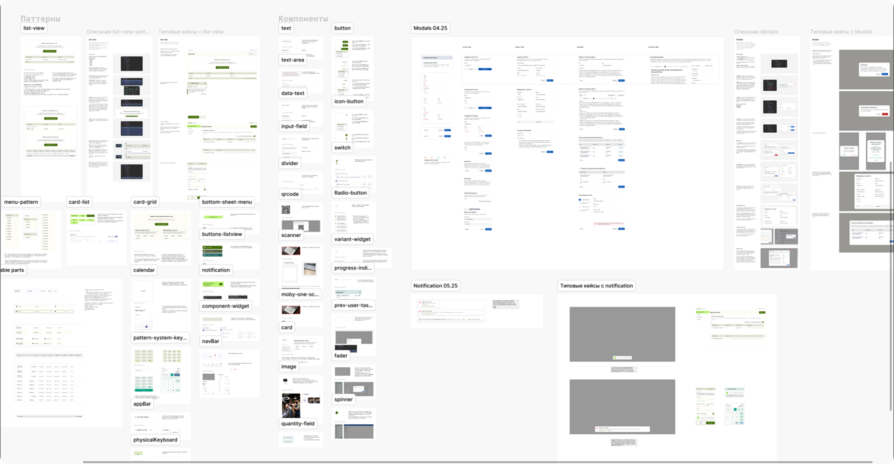

Продуктовый дизайнер с техническим бэкграундом.
Разбираюсь не только в интерфейсах, но и в процессах, которые за ними стоят.
ERP-платформа для бизнес-процессов.
PARTITURA — платформа для проектирования исполняемых бизнес-процессов. Модули описания доменных областей, управления BPMN, отладки и генерации интерфейсов обеспечивают Backend Driven UI подход.

Интерфейс проектировался инженерами для «инженеров». Но работать на платформе должны были аналитики и менеджеры проектных команд.
Поэтому, пользователям нужно было пройти обучение, чтобы просто начать работать.Моя задача была — сделать так, чтобы инструкции стали «не нужны».
Прежде чем менять — я стал пользователем. Первые две недели смотрел обучающие видео, заходил в платформу и выполнял базовые задачи бизнес-аналитиков. Прочувствовал все боли на себе.
Параллельно, я много общался с аналитиками, вел визуальный и UX-аудит, формировал дизайн-систему и новый визуальный концепт.Когда первые макеты и прототипы были готовы — возвращался к БА за обратной связью, итерировал и готовил спеки, после чего проводил hand-off с разработчиками.
В MVP уже было несколько разделов, но функции выглядели разрозненно и конкурировали за фокус внимания.
Такой формат сильно затруднял масштабирование платформы и добавление новых фич.Исходная навигация в одной левой панели совмещала переходы по разделам и специфичные функции. Приходилось постоянно вспоминать, где находится нужное тебе действие, особенно, если до него 3-4 клика.
Два принципа, которые сдвинули восприятие пользователей.


Дизайн — это не только интерфейсы.
Когда руководство подключило проектные команды к платформе, возникла проблема.
При совместной работе, аналитики создавали артефакты в соответствии со своим уровнем знаний и видением. Это привело к тому, что передача BPMN-диаграмм между командами блокировалась из-за разнородной структуры данных.


SetMobi — мобильный помощник
Параллельно подключался к мобильному продукту, пока в команде не было штатного дизайнера.Создал BDUI-кит: auto-layouts + доступ к переменным — связь с библиотекой ×2.5Инициировал переход от fixed-вёрстки к responsive через перенастройку компонентовПередал продукт новому дизайнеру и консультировал команду



Partitura10 модулей платформы.Регламент «Понимание задачи».Своя дизайн-система на основе MD.Снижение когнитивной нагрузки и количества ошибок (CSAT Before/After).
ДополнительноСвоя дизайн-система на основе MD для мобильного продукта.Перевод верстки на responsive.Консультации смежных команд по работе с платформой.Участие в найме, онбординг и менторинг 2х дизайнеров.